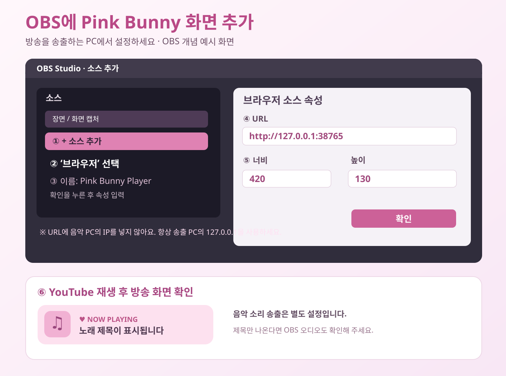

🐰 Pink Bunny 그림 설치 가이드
프로그램을 처음 설치하는 분을 위한 순서 안내입니다. 회원가입은 필요 없어요. Windows 송출 PC에서 시작하세요.
가장 먼저! 유튜브 음악을 어느 PC에서 재생하나요?
2컴 방송이어도 음악을 송출 PC에서 재생하면 이 안내를 선택하세요. 연결 코드는 입력하지 않아도 됩니다.

Chrome 확장 프로그램 등록하기
유튜브를 실제로 재생하는 PC의 Chrome에 확장 프로그램을 등록해야 합니다. 설치된 Pink Bunny 폴더의 extension 폴더를 선택하세요.

OBS 브라우저 소스 추가하기
OBS를 실행하는 송출 PC에서만 설정합니다. 브라우저 소스 주소는 항상 http://127.0.0.1:38765, 너비는 420, 높이는 130입니다.

안 될 때 가장 먼저 확인할 것
Pink Bunny가 송출 PC에서 실행 중인가요? Chrome 확장 프로그램에서 연결했나요? 유튜브 탭을 새로고침했나요? OBS 브라우저 소스의 URL과 크기가 올바른가요?
※ Pink Bunny는 영상 제목과 재생 정보를 OBS에 보여줍니다. 음악 소리 전송은 별도 OBS 오디오 설정이 필요해요. 두 PC 연결은 같은 신뢰할 수 있는 사설망에서만 사용하고, 연결 주소의 인증 코드를 공개하지 마세요.